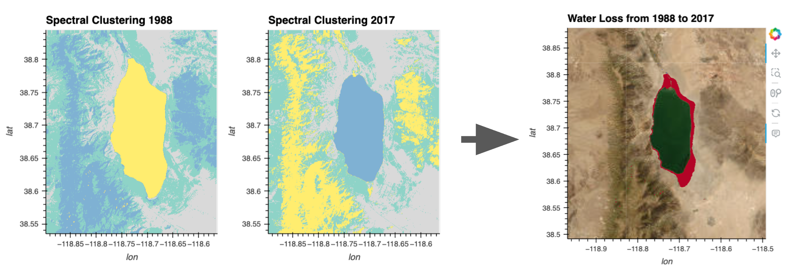

Spectral Clustering#

Overview#
The current notebook will demonstrate a simplified machine learning approach to observe the change in a lake water’s extent across time. In order to identify the water, we can use spectral clustering to classify each grid cell into a category based on the similarity of the combined set of pixels across wavelength-bands in our image stacks.
Our example approach uses a version of spectral clustering from dask_ml that is a scalable equivalent of what is available in scikit-learn. We will begin this approach with a single image stack and then conduct a direct comparison on the results from different time points.
This workflow uses data from Microsoft Planetary Computer but it can be adapted to work with any data ingestion approach from this cookbook.
Prerequisites#
Concepts |
Importance |
Notes |
|---|---|---|
Necessary |
||
Helpful |
Spectral clustering |
|
Helpful |
Spectral clustering at scale |
Time to learn: 20 minutes.
Imports#
import numpy as np
import odc.stac
import pandas as pd
import planetary_computer
import pystac_client
import xarray as xr
from dask.distributed import Client
from pystac.extensions.eo import EOExtension as eo
from dask_ml.cluster import SpectralClustering
import pyproj
# Viz
import hvplot.xarray
---------------------------------------------------------------------------
ImportError Traceback (most recent call last)
Cell In[1], line 7
5 import pystac_client
6 import xarray as xr
----> 7 from dask.distributed import Client
8 from pystac.extensions.eo import EOExtension as eo
9 from dask_ml.cluster import SpectralClustering
File ~/miniconda3/envs/cookbook-dev/lib/python3.10/site-packages/dask/distributed.py:13
5 _import_error_message = (
6 "dask.distributed is not installed.\n\n"
7 "Please either conda or pip install distributed:\n\n"
8 " conda install dask distributed # either conda install\n"
9 ' python -m pip install "dask[distributed]" --upgrade # or pip install'
10 )
12 try:
---> 13 from distributed import *
14 except ImportError as e:
15 if e.msg == "No module named 'distributed'":
File ~/miniconda3/envs/cookbook-dev/lib/python3.10/site-packages/distributed/__init__.py:23
20 from dask.config import config # type: ignore
22 from distributed._version import get_versions
---> 23 from distributed.actor import Actor, ActorFuture, BaseActorFuture
24 from distributed.client import (
25 Client,
26 CompatibleExecutor,
(...)
35 wait,
36 )
37 from distributed.core import Status, connect, rpc
File ~/miniconda3/envs/cookbook-dev/lib/python3.10/site-packages/distributed/actor.py:13
9 from typing import Generic, Literal, NoReturn, TypeVar
11 from tornado.ioloop import IOLoop
---> 13 from distributed.client import Future
14 from distributed.protocol import to_serialize
15 from distributed.utils import LateLoopEvent, iscoroutinefunction, sync, thread_state
File ~/miniconda3/envs/cookbook-dev/lib/python3.10/site-packages/distributed/client.py:34
31 from tlz import first, groupby, merge, partition_all, valmap
33 import dask
---> 34 from dask.base import collections_to_dsk, normalize_token, tokenize
35 from dask.core import flatten, validate_key
36 from dask.highlevelgraph import HighLevelGraph
ImportError: cannot import name 'collections_to_dsk' from 'dask.base' (/home/runner/miniconda3/envs/cookbook-dev/lib/python3.10/site-packages/dask/base.py)
Loading Data#
Let’s start by loading some Landsat data. These steps are covered in the Data Ingestion - Planetary Computer prerequisite.
Search the catalog#
catalog = pystac_client.Client.open(
"https://planetarycomputer.microsoft.com/api/stac/v1",
modifier=planetary_computer.sign_inplace,
)
bbox = [-118.89, 38.54, -118.57, 38.84] # Region over a lake in Nevada, USA
datetime = "2017-06-01/2017-09-30" # Summer months of 2017
collection = "landsat-c2-l2"
platform = "landsat-8"
cloudy_less_than = 1 # percent
search = catalog.search(
collections=["landsat-c2-l2"],
bbox=bbox,
datetime=datetime,
query={"eo:cloud_cover": {"lt": cloudy_less_than}, "platform": {"in": [platform]}},
)
items = search.get_all_items()
print(f"Returned {len(items)} Items:")
[[i, item.id] for i, item in enumerate(items)]
Load a dataset#
item = items[1] # select one of the results
assets = []
for _, asset in item.assets.items():
try:
assets.append(asset.extra_fields["eo:bands"][0])
except:
pass
cols_ordered = [
"common_name",
"description",
"name",
"center_wavelength",
"full_width_half_max",
]
bands = pd.DataFrame.from_dict(assets)[cols_ordered]
bands
ds_2017 = odc.stac.stac_load(
[item],
bands=bands.common_name.values,
bbox=bbox,
chunks={}, # <-- use Dask
).isel(time=0)
Retain CRS Attribute#
epsg = item.properties["proj:epsg"]
ds_2017.attrs["crs"] = f"epsg:{epsg}"
da_2017 = ds_2017.to_array(dim="band")
da_2017
Reshaping Data#
The shape of our data is currently n_bands, n_y, n_x. In order for dask-ml / scikit-learn to consume our data, we’ll need to reshape our image stacks into n_samples, n_features, where n_features is the number of wavelength-bands and n_samples is the total number of pixels in each wavelength-band image. Essentially, we’ll be creating a vector of pixels out of each image, where each pixel has multiple features (bands), but the ordering of the pixels is no longer relevant to the computation.
By using xarray methods to flatten the data, we can keep track of the coordinate labels ‘x’ and ‘y’ along the way. This means that we have the ability to reshape back to our original array at any time with no information loss!
flattened_xda = da_2017.stack(z=("x", "y")) # flatten each band
flattened_t_xda = flattened_xda.transpose("z", "band")
flattened_t_xda
Standardize Data#
Now that we have the data in the correct shape, let’s standardize (or rescale) the values of the data. We do this to get all the flattened image vectors onto a common scale while preserving the differences in the ranges of values. Again, we’ll demonstrate doing this first in NumPy and then xarray.
with xr.set_options(keep_attrs=True):
rescaled_xda = (flattened_t_xda - flattened_t_xda.mean()) / flattened_t_xda.std()
rescaled_xda
Info
Above, we are using a context manager "with xr.set_options(keep_attrs=True):" to retain the array's attributes through the operations. That is, we want any metadata like 'crs' to stay with our result so we can use 'geo=True' in our plotting.As rescaled_xda is still a Dask object, if we wanted to actually run the rescaling at this point (provided that all the data can fit into memory), we would use rescaled_xda.compute().
ML pipeline#
Now that our data is in the proper shape and value range, we are ready to conduct spectral clustering. Here we will use a version of spectral clustering from dask_ml that is a scalable equivalent to operations from Scikit-learn that cluster pixels based on similarity (across all wavelength-bands, which makes it spectral clustering by spectra!)
client = Client(processes=False)
client
Now we will compute and persist the rescaled data to feed into the ML pipeline. Notice that our X matrix below has the shape: n_samples, n_features as discussed earlier.
X = client.persist(rescaled_xda)
X.shape
First we will set up the model with the number of clusters, and other options.
clf = SpectralClustering(
n_clusters=4,
random_state=0,
gamma=None,
kmeans_params={"init_max_iter": 5},
persist_embedding=True,
)
This next step is the slow part. We’ll fit the model to our matrix X. Depending on your setup, it could take seconds to minutes to run depending on the size of our data.
%time clf.fit(X)
Let’s check the shape of the result:
labels = clf.assign_labels_.labels_.compute()
labels.shape
labels
The result is a single vector of cluster labels.
Un-flattening#
Once the computation is done, we can use the coordinates of our input array to restack our output array back into an image. Again, one of the main benefits of using xarray for this stacking and unstacking is that it keeps track of the coordinate information for us.
Since the original array is n_samples by n_features (90000, 6) and the cluster label output is (90000,), we just need the coordinates from one of the original features in the shape of n_samples. We can just copy the coordinates from the first input feature and populate is with our output data:
template = flattened_t_xda[:, 0]
output_array = template.copy(data=labels)
output_array
With this new output array with coordinates copied from the input array, we can unstack back to the original x and y image dimensions by just using .unstack().
unstacked_2017 = output_array.unstack()
unstacked_2017
Finally, we can visualize the results! By hovering over the resulting imge, we can see that the lake water has been clustered with a certain label or ‘value’.
raw_plot_2017 = da_2017.sel(band="red").hvplot.image(
x="x", y="y", geo=True, xlabel="lon", ylabel="lat", datashade=True, cmap="greys", title="Raw Image 2017",
)
result_plot_2017 = unstacked_2017.hvplot(
x="x", y="y", cmap="Set3", geo=True, xlabel="lon", ylabel="lat", colorbar=False, title="Spectral Clustering 2017",
)
raw_plot_2017 + result_plot_2017
Spectral Clustering for 1988#
We have conducted the spectral clustering for 2017 and now we want to compare this result to the lake in 1988. Let’s load data from 1988 and run the same analysis as above.
We will use the same catalog, but we will search it for a different point in time and different Landsat mission
Load the data#
bbox = [-118.89, 38.54, -118.57, 38.84] # Region over a lake in Nevada, USA
datetime = "1988-06-01/1988-09-30" # Summer months of 1988
collection = "landsat-c2-l2"
platform = "landsat-5" # Searching through an earlier landsat mission
cloudy_less_than = 1 # percent
search = catalog.search(
collections=["landsat-c2-l2"],
bbox=bbox,
datetime=datetime,
query={"eo:cloud_cover": {"lt": cloudy_less_than}, "platform": {"in": [platform]}},
)
items = search.get_all_items()
item = items[1] # select one of the results
Notice that Landsat 5 data from 1988 has slightly different spectra than Landsat 8 from 2017. Details like this are important to keep in mind when performing analyses that directly compare across missions.
assets = []
for _, asset in item.assets.items():
try:
assets.append(asset.extra_fields["eo:bands"][0])
except:
pass
cols_ordered = [
"common_name",
"description",
"name",
"center_wavelength",
"full_width_half_max",
]
bands = pd.DataFrame.from_dict(assets)[cols_ordered]
bands
ds_1988 = odc.stac.stac_load(
[item],
bands=bands.common_name.values,
bbox=bbox,
chunks={}, # <-- use Dask
).isel(time=0)
epsg = item.properties["proj:epsg"]
ds_1988.attrs["crs"] = f"epsg:{epsg}"
da_1988 = ds_1988.to_array(dim="band")
da_1988
Reshape and Standardize#
flattened_xda = da_1988.stack(z=("x", "y"))
flattened_t_xda = flattened_xda.transpose("z", "band")
with xr.set_options(keep_attrs=True):
rescaled_xda = (flattened_t_xda - flattened_t_xda.mean()) / flattened_t_xda.std()
rescaled_xda
Spectral Clustering#
X = client.persist(rescaled_xda)
clf = SpectralClustering(
n_clusters=4,
random_state=0,
gamma=None,
kmeans_params={"init_max_iter": 5},
persist_embedding=True,
)
%time clf.fit(X)
labels = clf.assign_labels_.labels_.compute()
labels.shape
labels
Unstack and Visualize#
template = flattened_t_xda[:, 0]
output_array = template.copy(data=labels)
unstacked_1988 = output_array.unstack()
unstacked_1988
raw_plot_1988 = da_1988.sel(band="red").hvplot.image(
x="x", y="y", geo=True, xlabel="lon", ylabel="lat", datashade=True, cmap="greys", title="Raw 1988"
)
result_plot_1988 = unstacked_1988.hvplot(
x="x", y="y", cmap="Set3", geo=True, xlabel="lon", ylabel="lat", colorbar=False, title="Spectral Clustering 1988",
)
raw_plot_1988 + result_plot_1988
Spectral Clustering Over Time#
Our hypothesis is that the lake’s area is receding over time and so we want to visualize the potential change. Let’s first visually compare the plot of the clustering results from the different time points.
result_plot_1988 + result_plot_2017
By hovering over the lake in each image, we can see that the water was labeled (‘value’) with a certain cluster number in both images. We will programmatically grab the water cluster value from the middle of the lake using pyproj to convert from longtitude/latitude coordinates.
lon_lake_center = -118.71
lat_lake_center = 38.7
proj = pyproj.Proj(unstacked_1988.crs)
lake_center_x, lake_center_y = proj(lon_lake_center, lat_lake_center)
water_cluster_1988 = int(unstacked_1988.sel(x=lake_center_x, y=lake_center_y, method='nearest'))
water_cluster_2017 = int(unstacked_2017.sel(x=lake_center_x, y=lake_center_y, method='nearest'))
print('water cluster values:', water_cluster_1988, water_cluster_2017)
Now, let’s set any value that isn’t our water cluster label to 0.
with xr.set_options(keep_attrs=True):
water_1988 = (unstacked_1988 == water_cluster_1988).astype(int)
water_2017 = (unstacked_2017 == water_cluster_2017).astype(int)
water_1988_plot = water_1988.hvplot(
x="x", y="y", cmap="greys", geo=True, colorbar=False, title="1988 Water"
)
water_2017_plot = water_2017.hvplot(
x="x", y="y", cmap="greys", geo=True, colorbar=False, title="2017 Water"
)
water_1988_plot + water_2017_plot
Now we can take the difference of these water label arrays to see exactly where the water levels has changed.
with xr.set_options(keep_attrs=True):
water_diff = water_1988 - water_2017
Red pixels (array value ‘1’) of our image below are where water was lost from 1988 to 2017.
water_diff.hvplot(
x="x", y="y", cmap='coolwarm', geo=True, xlabel="long", ylabel="lat", colorbar=False, title="Water Change 1988-2017",
)
We did it! We are observing the change in the lake shoreline over time using a simple spectral clustering approach.
Let’s finish things off by adding some geo tiles as a background. To only display the colored pixels overlaid on geo tiles, we could either set the array’s background value (‘0’) to ‘Not a Number’ (NaN), or we could just inform hvPlot that we want the background valued pixels to be transparent with .redim.nodata(value=0).
water_diff.hvplot(
x="x", y="y", width=400, height=400, cmap='coolwarm', geo=True, xlabel="lon", ylabel="lat", alpha=1, colorbar=False, title="Water Loss from 1988 to 2017", tiles="ESRI",
).redim.nodata(value=0)
Summary#
Starting from raw Landsat data, we have used a simple spectral clustering approach to observe the change in a lake water’s extent across time.
What’s next?#
Adapt this notebook for your own use case or select another workflow example notebook.
Resources and References#
Authored by Demetris Roumis circa Jan, 2023